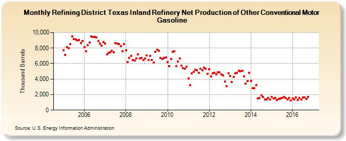

|
Download Data (XLS File) |
|
||||||||
|  | ||||||||
| Refining District Texas Inland Refinery Net Production of Other Conventional Motor Gasoline (Thousand Barrels) | ||||||||
| Year | Jan | Feb | Mar | Apr | May | Jun | Jul | Aug | Sep | Oct | Nov | Dec |
|---|---|---|---|---|---|---|---|---|---|---|---|---|
| 2005 | 7,696 | 7,154 | 8,134 | 7,989 | 8,485 | 9,495 | 9,146 | 9,085 | 8,953 | 9,053 | 8,617 | 8,911 |
| 2006 | 8,104 | 7,586 | 8,349 | 8,730 | 9,470 | 9,406 | 9,451 | 9,349 | 8,887 | 8,602 | 8,335 | 8,753 |
| 2007 | 8,554 | 7,180 | 7,372 | 7,453 | 7,637 | 7,441 | 8,611 | 8,566 | 8,531 | 8,240 | 7,563 | 8,535 |
| 2008 | 7,689 | 6,209 | 6,714 | 6,998 | 6,435 | 6,420 | 6,638 | 7,216 | 6,642 | 6,755 | 6,466 | 6,652 |
| 2009 | 7,048 | 6,447 | 6,982 | 6,477 | 6,126 | 7,538 | 7,808 | 7,661 | 6,694 | 6,584 | 6,744 | 6,786 |
| 2010 | 6,173 | 5,692 | 6,607 | 7,549 | 7,585 | 5,700 | 6,246 | 6,662 | 5,725 | 5,393 | 5,333 | 5,624 |
| 2011 | 4,086 | 3,234 | 4,714 | 4,950 | 5,220 | 5,144 | 4,820 | 5,327 | 5,124 | 5,485 | 5,351 | 4,662 |
| 2012 | 5,253 | 4,368 | 4,722 | 4,829 | 4,601 | 4,878 | 4,847 | 4,592 | 4,483 | 3,692 | 3,097 | 4,720 |
| 2013 | 4,405 | 3,644 | 4,287 | 4,766 | 4,792 | 5,098 | 5,035 | 5,074 | 4,335 | 3,424 | 3,768 | 4,781 |
| 2014 | 3,778 | 2,811 | 2,855 | 3,197 | 1,502 | 1,540 | 1,890 | 1,718 | 1,356 | 1,350 | 1,570 | 1,352 |
| 2015 | 1,718 | 1,471 | 1,565 | 1,326 | 1,445 | 1,513 | 1,539 | 1,678 | 1,601 | 1,398 | 1,572 | 1,247 |
| 2016 | 1,533 | 1,349 | 1,627 | 1,283 | 1,558 | 1,363 | 1,637 | 1,613 | 1,453 | 1,714 | 1,246 | |
| - = No Data Reported; -- = Not Applicable; NA = Not Available; W = Withheld to avoid disclosure of individual company data. |
| Release Date: 1/31/2017 |
| Next Release Date: 2/28/2017 |